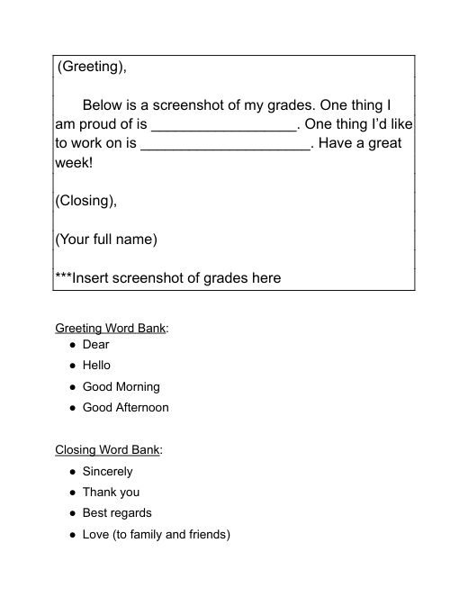
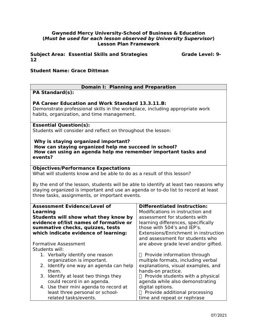
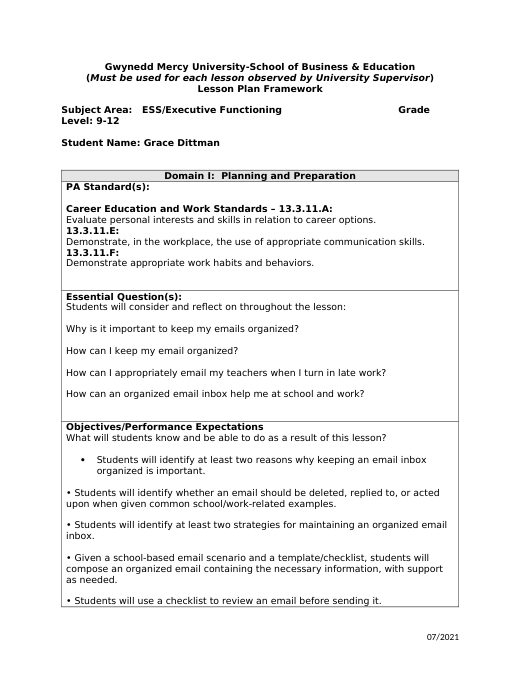
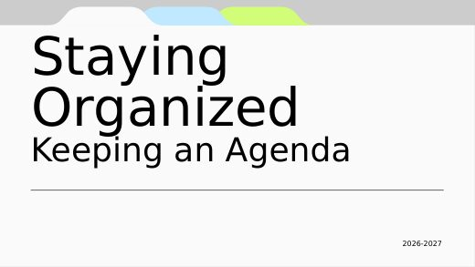
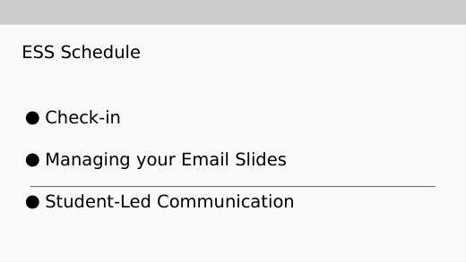

Grace Dittman
Student Teaching Portfolio
Block 2 Math
Block 3 Math
ESS
Lesson Plans
Résumé
Search
Home
›
ESS
›
weeks 1+2+3
weeks 1+2+3
weeks 4+5 →
Files in this folder
Welcome Letter to Families
Welcome Letter ESS.pdf
Activities
· 2 files

SLC Template
SLC Template.pdf
Staying Organized: Keeping an Agenda (slides)
Staying Organized_ Agenda.pdf
Lesson Plans
· 8 files
Managing Email: Teaching Script
email organization.pdf
Executive Functioning Self-Assessment
ESS9-14LessonPlan.docx
Identifying Triggers
ESS9-15LessonPlan.docx
Ice-Breakers & Student Profiles
ESS9-16LessonPlan.docx
Writing a Professional Email
ESS9-17LessonPlan.docx
Friday Organization Reset
ESS9-18LessonPlan.docx

ESSAgendaLessonPlan
ESSAgendaLessonPlan.docx

ESSEmailLessonPlan
ESSEmailLessonPlan.docx
Slides
· 2 files

Staying Organized: Agenda
Staying Organized: Agenda.pptx

Staying Organized: Email
Staying Organized: Email.pptx
weeks 4+5 →